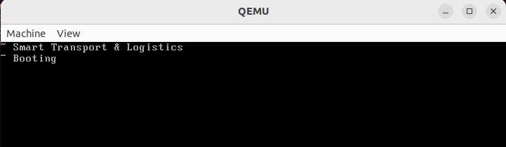

20 years of uptime is a reverse-engineering challenge I designed for the finals of the European Cyber Week 2022. Here is the source code for this challenge.
We begin by extracting and inspecting the provided archive file:
1$ file os.bin
2os.bin: DOS/MBR boot sector; partition 1 : ID=0xb2, active 0xb0, start-CHS
3(0x194,19,46), end-CHS (0x3e0,51,38), startsector 1456018950, 2168693133
4sectors; partition 3 : ID=0x22, active 0xc1, start-CHS (0x330,141,6), end-CHS
5(0x362,150,34), startsector 3705749179, 1985222079 sectors
A DOS/MBR boot sector? Ok let’s figure it out using qemu (qemu-system-i386 -fda os.bin):

Ok now what? Typing doesn’t do seems to do anything. At this point we should try to reverse engineer the os.bin file. Fortunately, it is highly documented and discussed.
In order to inspect the MBR, we can use the Kaitai Struct parsing library. In the following snippet, I’ve added a pdb breakpoint for me to play with the code:
1# This is a generated file! Please edit source .ksy file and use
2# kaitai-struct-compiler to rebuild
3
4from pkg_resources import parse_version
5import kaitaistruct
6from kaitaistruct import KaitaiStruct, KaitaiStream, BytesIO
7
8
9if parse_version(kaitaistruct.__version__) < parse_version('0.9'):
10 raise Exception("Incompatible Kaitai Struct Python API: 0.9 or later is required, but you have %s" % (kaitaistruct.__version__))
11
12class MbrPartitionTable(KaitaiStruct):
13 """MBR (Master Boot Record) partition table is a traditional way of
14 MS-DOS to partition larger hard disc drives into distinct
15 partitions.
16
17 This table is stored in the end of the boot sector (first sector) of
18 the drive, after the bootstrap code. Original DOS 2.0 specification
19 allowed only 4 partitions per disc, but DOS 3.2 introduced concept
20 of "extended partitions", which work as nested extra "boot records"
21 which are pointed to by original ("primary") partitions in MBR.
22 """
23 def __init__(self, _io, _parent=None, _root=None):
24 self._io = _io
25 self._parent = _parent
26 self._root = _root if _root else self
27 self._read()
28
29 def _read(self):
30 self.bootstrap_code = self._io.read_bytes(446)
31 self.partitions = [None] * (4)
32 for i in range(4):
33 self.partitions[i] = MbrPartitionTable.PartitionEntry(self._io, self, self._root)
34
35 self.boot_signature = self._io.read_bytes(2)
36 if not self.boot_signature == b"\x55\xAA":
37 raise kaitaistruct.ValidationNotEqualError(b"\x55\xAA", self.boot_signature, self._io, u"/seq/2")
38
39 class PartitionEntry(KaitaiStruct):
40 def __init__(self, _io, _parent=None, _root=None):
41 self._io = _io
42 self._parent = _parent
43 self._root = _root if _root else self
44 self._read()
45
46 def _read(self):
47 self.status = self._io.read_u1()
48 self.chs_start = MbrPartitionTable.Chs(self._io, self, self._root)
49 self.partition_type = self._io.read_u1()
50 self.chs_end = MbrPartitionTable.Chs(self._io, self, self._root)
51 self.lba_start = self._io.read_u4le()
52 self.num_sectors = self._io.read_u4le()
53
54
55 class Chs(KaitaiStruct):
56 def __init__(self, _io, _parent=None, _root=None):
57 self._io = _io
58 self._parent = _parent
59 self._root = _root if _root else self
60 self._read()
61
62 def _read(self):
63 self.head = self._io.read_u1()
64 self.b2 = self._io.read_u1()
65 self.b3 = self._io.read_u1()
66
67 @property
68 def sector(self):
69 if hasattr(self, '_m_sector'):
70 return self._m_sector if hasattr(self, '_m_sector') else None
71
72 self._m_sector = (self.b2 & 63)
73 return self._m_sector if hasattr(self, '_m_sector') else None
74
75 @property
76 def cylinder(self):
77 if hasattr(self, '_m_cylinder'):
78 return self._m_cylinder if hasattr(self, '_m_cylinder') else None
79
80 self._m_cylinder = (self.b3 + ((self.b2 & 192) << 2))
81 return self._m_cylinder if hasattr(self, '_m_cylinder') else None
82
83
84import pdb
85breakpoint()
Below is an extract of the partitions types and associated number of sectors:
1$ python3 mbr.py
2--Return--
3> /home/user/mbr.py(85)<module>()->None
4-> breakpoint()
5(Pdb) data = MbrPartitionTable.from_file("os.bin")
6(Pdb) print([(p.num_sectors, p.partition_type) for p in data.partitions])
7[(1952734948, 17), (3455595959, 97), (2874019475, 91), (4279421946, 63)]
The partition table looks invalid! Let’s inspect the bootstrap, code of the boot sector:
1(Pdb) out = open("code.bin", "wb")
2(Pdb) out.write(data.bootstrap_code)
3446
The hex view:
1$ xxd -o 0x7c00 code.bin
200007c00: 8816 597d bc00 8089 e5e8 3b00 bb8a 7c0f ..Y}......;...|.
300007c10: b60e d07c 0fb6 16da 7ce8 5700 bbd1 7c0f ...|....|.W...|.
400007c20: b60e a77c 0fb6 16aa 7ce8 4700 e8b9 00bb ...|....|.G.....
500007c30: 0010 b605 8a16 597d e8a0 00e8 ec00 ebfe ......Y}........
600007c40: e8bb 93ff ffeb fe50 b803 00cd 1058 c350 .......P.....X.P
700007c50: b40e b00d cd10 b00a cd10 58c3 60b4 0e8a ..........X.`...
800007c60: 073c 0074 05cd 1043 ebf5 61c3 e8ed ffe8 .<.t...C..a.....
900007c70: ddff c360 b40e 8a07 30d0 cd10 4349 83f9 ...`....0...CI..
1000007c80: 0074 02eb f1e8 c7ff 61c3 2977 043a 3625 .t......a.)w.:6%
1100007c90: 2377 0325 3639 2427 3825 2377 7177 1b38 #w.%69$'8%#wqw.8
1200007ca0: 303e 2423 3e34 2409 0d24 7743 3b46 4339 0>$#>4$..$wC;FC9
1300007cb0: 7474 693c 7477 4045 3c47 3843 423c 6845 tti<tw@E<G8CB<hE
1400007cc0: 4677 3c46 4575 4476 4040 4076 4576 3b06 Fw<FEuDv@@@vEv;.
1500007cd0: 1d09 5735 1818 031e 1910 57b4 0288 f0b5 ..W5......W.....
1600007ce0: 00b1 02b6 00cd 13c3 bbab 7c0f b60e a97c ..........|....|
1700007cf0: b400 cd16 0206 a87c 3206 cf7c 3a07 750a .......|2..|:.u.
1800007d00: 4349 83f9 007e 02eb e7c3 ebfe 0000 0000 CI...~..........
1900007d10: 0000 0000 ffff 0000 009a cf00 ffff 0000 ................
2000007d20: 0092 cf00 1700 0c7d 0000 fa0f 0116 247d .......}......$}
2100007d30: 0f20 c00c 010f 22c0 ea3d 7d08 0066 b810 . ...."..=}..f..
2200007d40: 008e d88e d08e c08e e08e e8bd 0080 0000 ................
2300007d50: 89e4 e8e9 feff ffeb fe00 9cce 4a41 d0bd ............JA..
2400007d60: bf54 ddb3 26fe f250 700f 825d 9fdf b260 .T..&..Pp..]...`
2500007d70: 3b58 b22b 1c9b 0a55 2fa5 946e 3cee 0f60 ;X.+...U/..n<..`
2600007d80: 90a1 32ce 3711 af29 d8ab 5efa d3fd 6c3b ..2.7..)..^...l;
2700007d90: b29c 5412 acb9 5091 4937 432a 8849 7420 ..T...P.I7C*.It
2800007da0: 2b47 6abb d77c 975b 6f5d 27b5 fbd9 32e5 +Gj..|.[o]'...2.
2900007db0: fd53 b0e2 0f14 4273 d83e e7d5 82a3 .S....Bs.>....
There is an outstanding chunk of data between 0x7c80 and 0x7cd0.
We can now dump and read the assembly code.
I’ve selected and annotated the most interesting bits in the following objdump output:
1$ objdump -D -b binary -mi386 -Maddr16,data16 -Mintel --adjust-vma=0x7c00 code.bin
2
3code.bin: file format binary
4
5
6Disassembly of section .data:
7
800007c00 <.data>:
9 7c00: 88 16 59 7d mov BYTE PTR ds:0x7d59,dl ; save initial dl value (drive number)
10 7c04: bc 00 80 mov sp,0x8000 ; setup initial stack frame (stack ptr)
11 7c07: 89 e5 mov bp,sp ; and base ptr
12 7c09: e8 3b 00 call 0x7c47 ; cls
13
14 7c0c: bb 8a 7c mov bx,0x7c8a ; xor_string_ptr
15 7c0f: 0f b6 0e d0 7c movzx cx,BYTE PTR ds:0x7cd0 ; xor_string_length
16 7c14: 0f b6 16 da 7c movzx dx,BYTE PTR ds:0x7cda ; xor_key
17 7c19: e8 57 00 call 0x7c73 ; print_xor_string()
18
19 7c1c: bb d1 7c mov bx,0x7cd1
20 7c1f: 0f b6 0e a7 7c movzx cx,BYTE PTR ds:0x7ca7
21 7c24: 0f b6 16 aa 7c movzx dx,BYTE PTR ds:0x7caa
22 7c29: e8 47 00 call 0x7c73 ; print_xor_string()
23
24 7c2c: e8 b9 00 call 0x7ce8 ; read_passwd
25
26 7c2f: bb 00 10 mov bx,0x1000
27 7c32: b6 05 mov dh,0x5
28 7c34: 8a 16 59 7d mov dl,BYTE PTR ds:0x7d59
29 7c38: e8 a0 00 call 0x7cdb ;
30
31 7c3b: e8 ec 00 call 0x7d2a ; where?
32
33 7c3e: eb fe jmp 0x7c3e ; loop forever
34
35[...]
36
37cls:
38 7c47: 50 push ax ; save ax
39 7c48: b8 03 00 mov ax,0x3 ; ah == 0 -> clear screen
40 7c4b: cd 10 int 0x10 ; bios int 10h for video services
41 7c4d: 58 pop ax ; rstor ax
42 7c4e: c3 ret
43
44print_newline:
45 7c4f: 50 push ax
46 7c50: b4 0e mov ah,0xe ; display character
47 7c52: b0 0d mov al,0xd ; '\r'
48 7c54: cd 10 int 0x10 ; video int
49 7c56: b0 0a mov al,0xa ; '\n'
50 7c58: cd 10 int 0x10 ; video int
51 7c5a: 58 pop ax
52 7c5b: c3 ret
53
54[...]
55
56print_xor_string(bx: xor_string_ptr, cx: xor_string_length, dl: xor_key):
57 7c73: 60 pusha ; save registers
58 7c74: b4 0e mov ah,0xe ; display character
59 7c76: 8a 07 mov al,BYTE PTR [bx] ; store char at bx in al
60 7c78: 30 d0 xor al,dl ; xor al char with dl
61 7c7a: cd 10 int 0x10 ; video int
62 7c7c: 43 inc bx ; increment string ptr
63 7c7d: 49 dec cx ; decrement string length
64 7c7e: 83 f9 00 cmp cx,0x0 ; test end of string
65 7c81: 74 02 je 0x7c85 ; chain with 0x7c4f
66 7c83: eb f1 jmp 0x7c76 ; loop
67 7c85: e8 c7 ff call 0x7c4f ; print_newline
68 7c88: 61 popa ; restore registers
69 7c89: c3 ret
70
71[...]
72
73read_passwd:
74 7ce8: bb ab 7c mov bx,0x7cab ; encoded_pass_str
75 7ceb: 0f b6 0e a9 7c movzx cx,BYTE PTR ds:0x7ca9 ; pass_length
76 7cf0: b4 00 mov ah,0x0 ; read keyboard scancode (blocking)
77 7cf2: cd 16 int 0x16 ; keyboard service
78 7cf4: 02 06 a8 7c add al,BYTE PTR ds:0x7ca8 ; rot scancode value
79 7cf8: 32 06 cf 7c xor al,BYTE PTR ds:0x7ccf ; xor scancode value
80 7cfc: 3a 07 cmp al,BYTE PTR [bx] ; cmp with encoded password
81 7cfe: 75 0a jne 0x7d0a ; bad boy!
82 7d00: 43 inc bx ; increment password string ptr
83 7d01: 49 dec cx ; decrement password string length
84 7d02: 83 f9 00 cmp cx,0x0 ; test end of password
85 7d05: 7e 02 jle 0x7d09 ; yay -> access granted
86 7d07: eb e7 jmp 0x7cf0 ; nay -> loop
87 7d09: c3 ret
The code begins by printing two xor-encoded strings. We can identify such printing by use of the video service triggers through int 10h. The code then asks for a password that we can identify by the keyboard read of int 16h. Here is some documentation for the BIOS common functions.
Note that if the password is wrong, it just keeps looping silently.
Finally, The password comparison algorithm consists of an add and a xor so we’re able to reverse it easily.
At this point, we can write a script to recover the encoded strings:
1import struct
2
3with open("os.bin", "rb") as fh:
4 code = fh.read()
5
6print("key(s)\t\tlength\t\tstring")
7print("===\t\t======\t\t======")
8key = struct.unpack_from("B", code, offset=0xDA)[0]
9length = struct.unpack_from("B", code, offset=0xD0)[0]
10encoded_string = struct.unpack_from(f"{length}B", code, offset=0x8A)
11decoded_string = "".join([chr(c ^ key) for c in encoded_string])
12print(f"{key:#x}\t\t{length:#x}\t\t{decoded_string}")
13
14key = struct.unpack_from("B", code, offset=0xAA)[0]
15length = struct.unpack_from("B", code, offset=0xA7)[0]
16encoded_string = struct.unpack_from(f"{length}B", code, offset=0xD1)
17decoded_string = "".join([chr(c ^ key) for c in encoded_string])
18print(f"{key:#x}\t\t{length:#x}\t\t{decoded_string}")
19
20rot = struct.unpack_from("B", code, offset=0xA8)[0]
21xor = struct.unpack_from("B", code, offset=0xCF)[0]
22length = struct.unpack_from("B", code, offset=0xA9)[
23 0
24] # byte again? yes (a6 is for rot key)
25encoded_string = struct.unpack_from(f"{length}B", code, offset=0xAB)
26decoded_string = "".join([chr((c ^ xor) - rot) for c in encoded_string])
27print(f"{rot:#x} && {xor:#x}\t{length:#x}\t\t{decoded_string}")
key(s) length string
=== ====== ======
0x57 0x1d ~ Smart Transport & Logistics
0x77 0x9 ~ Booting
0xd && 0x6 0x24 80382eeb-ed96-4187-a63d-36f5c999c6c0
Yay! We decoded the password! We can now send it through the qemu monitor:
1$ qemu-system-i386 -monitor tcp:127.0.0.1:1234,server,nowait -fda os.bin &
2$ cat ./sendkeys.py
3import time
4
5
6flag="80382eeb-ed96-4187-a63d-36f5c999c6c0"
7for char in flag:
8 if char == "-":
9 cmd = "sendkey minus"
10 else:
11 cmd = "sendkey " + char
12
13 print(cmd)
14 time.sleep(.42)
15$ python3 ./sendkeys.py | nc -v 127.0.0.1 1234
16Connection to 127.0.0.1 1234 port [tcp/*] succeeded!
17QEMU 6.2.0 monitor - type 'help' for more information
18(qemu) sendkey 8
19(qemu) sendkey 0
20(qemu) sendkey 3
21(qemu) sendkey 8
22(qemu) sendkey 2
23(qemu) sendkey e
24(qemu) sendkey e
25(qemu) sendkey b
26(qemu) sendkey minus
27(qemu) sendkey e
28(qemu) sendkey d
29(qemu) sendkey 9
30(qemu) sendkey 6
31(qemu) sendkey minus
32(qemu) sendkey 4
33(qemu) sendkey 1
34(qemu) sendkey 8
35(qemu) sendkey 7
36(qemu) sendkey minus
37(qemu) sendkey a
38(qemu) sendkey 6
39(qemu) sendkey 3
40(qemu) sendkey d
41(qemu) sendkey minus
42(qemu) sendkey 3
43(qemu) sendkey 6
44(qemu) sendkey f
45(qemu) sendkey 5
46(qemu) sendkey c
47(qemu) sendkey 9
48(qemu) sendkey 9
49(qemu) sendkey 9
50(qemu) sendkey c
51(qemu) sendkey 6
52(qemu) sendkey c
53(qemu) sendkey 0
And the systems boots properly:
And finally:
1$ echo "FLAG{$(printf '%s' '80382eeb-ed96-4187-a63d-36f5c999c6c0' | md5sum | awk '{print $1}')}"
2FLAG{0556c6f9afbb5038a7c52e37ec09c993}